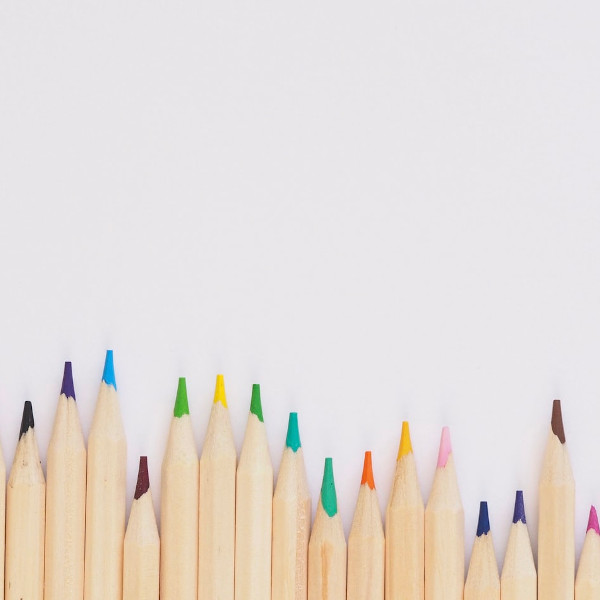
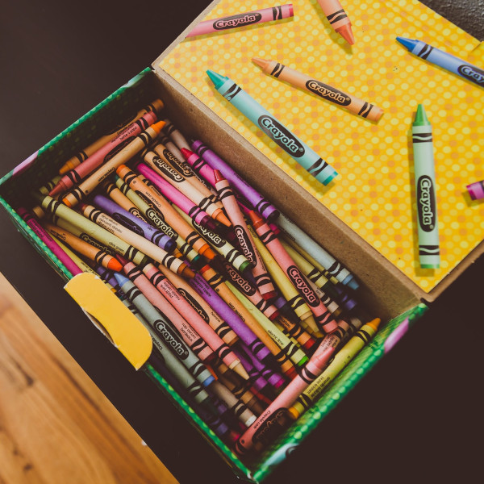
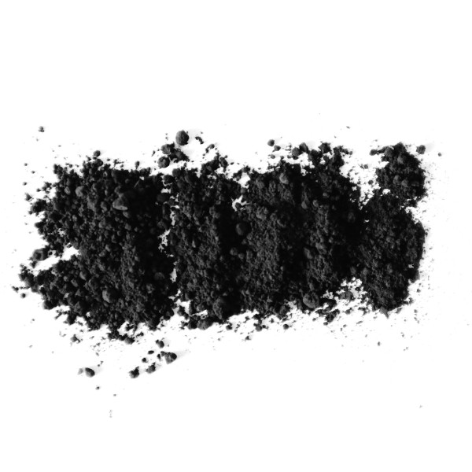
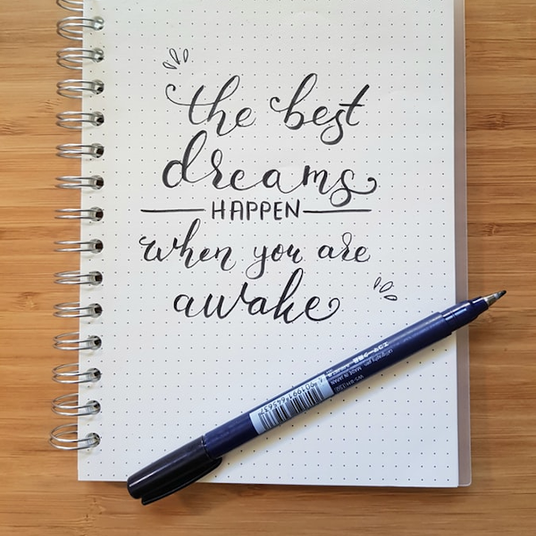
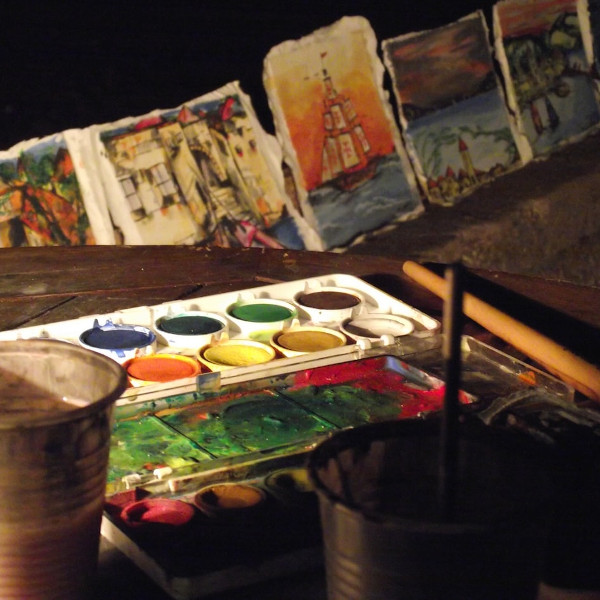
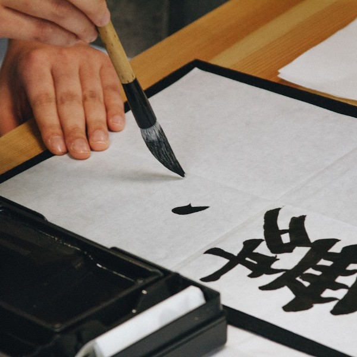

Hi, my name is Natalie Collins and I've been an artist for as long as I can remember.
I always wished for a website where I had all of the resources I needed to learn more about art at no cost
to me. Now that I've collected
most of the knowledge I wanted over the years from various places, I figured what better way to give back to
the art community than to provide
that site I always wished I could have handy for all of you. No matter your skill level or interest, I hope
that art can open doors for you the way it has for me.
-Natalie
Getting Started
One of the biggest pieces of wisdom that was departed upon me was to keep it simple. The best way to start
learning how to create any form of art is to start
drawing. A practice drawing is called a sketch, which helps you plan for a more complete and complex version
of the art you create. All you need to
do this is a writing utensil and some paper. This leads me to introduce our first tool you can use to create
art: the pencil!
Pencils are one of the most widely known tools for artists. They use a stick of graphite in a piece of wood
to mark on paper and create drawings.
The best part about a pencil is that mistakes can be erased!
Dry Mediums

Colored Pencils
All the familiarity of pencils, with more variety in color!

Crayons
Waxy and colorful, they pack a lot more punch than you'd expect.

Charcoal and Pastels
Carries the mess and flexibility of painting, in a more transportable form.

Pens
The pencil's less forgiving (and more interesting) cousin!
Wet Mediums
Oils
Despite the super long drying time, oil paints are a historically popular medium.

Watercolors
Although delicate and beautiful- the fluidity of this paint can become a great friend or foe.
Acrylics
A quick drying paint that's great for building texture.

Inks
Similar to watercolor, they can be used in paintings or more popularly- calligraphy!